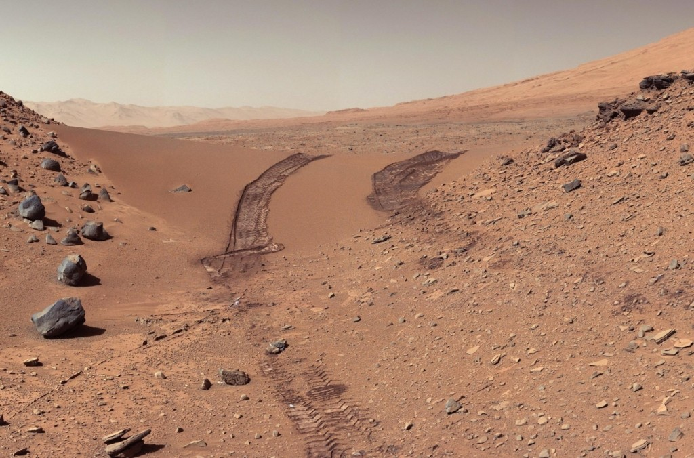

That fiery orange spot is of course Mars and the pre-telescope imaginings above provide a picture of what’s happening in the sky right now and what will continue to unfold into October and early November. Mars won’t be this close or bright again until July 2033. And then in September 2035 even better views will be possible – trumping the viewing opportunities of Mars afforded back in 2018. Perhaps there’ll be boot prints in Martian dust by the time 2035 rolls around?
The ‘Red Planet’ (curiously more orange than red) will be at opposition on 13 October 2020. It will be at its closest approach on 6 October at just 62.1 million km from Earth. So, in the evenings be sure to look up to the northeast and wave ‘hello’ to Mars from September onwards right up until November. After this, it will fade quickly.
When a planet is at ‘opposition’, Earth is directly between it and the Sun, so together they form a line with Earth in the middle. Earth orbits the Sun about 25% faster than Mars, so every 26 months Earth overtakes Mars on the ‘inside lane’.
At this time, they are of course, closer together, so we see Mars not only much brighter but also larger when viewed through a telescope. Earth passes by Mars quite quickly, so the time for best telescope viewing is just a few weeks before and after the opposition.
